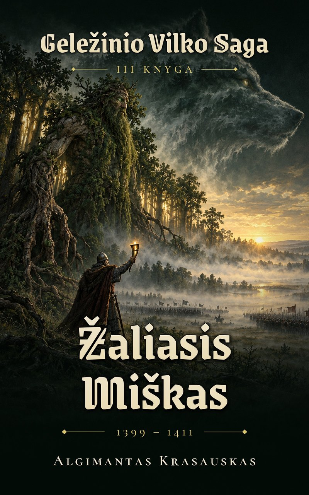

III · Žaliasis Miškas¶
Angliški leidimai pasirodys netrukus. Lietuviškus leidimus nemokamai skaitykite internete.
Read in Lithuanian: Book III · Span: 1399–1411 · Protagonist: Vytautas · Arc: atonement through alliance
III · Žaliasis Miškas

III · The Green Wood · book¶
Tipas |
knyga |
Metai |
1399–1411 |
Pastaba |
The recovery from Vorskla, the secret alliances with Poland, the Samogitian uprisings, and the victory at Grunwald. |
Parts and chapters¶
Part |
Chapters |
Years |
Core |
|---|---|---|---|
I · Sušalę Pumpurai (Frozen Buds) |
1399–1408 |
Samogitia under the Order; Vilnius–Radom (1401); the first rising (13 Mar 1401); Raciąż (22–23 May 1404, where Marquard insults Birutė); Pilkoji; the wolves‘ baptism; the Ugra (1408). |
|
II · Žaliasis Labirintas (The Green Labyrinth) |
ch. 11–20 |
1407–1410 |
Ulrich von Jungingen; the second rising (26 May 1409); the Council at Brest; the Vistula bridge; the lantern; Grunwald, 15 Jul 1410. |
III · Taikos Kaina (The Price of Peace) |
ch. 21–30 |
1410–1411 |
Marienburg besieged in vain; Galminas’s grove; the First Peace of Thorn (1 Feb 1411); the epilogue Rašalas in Kraków. |
Premise¶
After the Vorskla Vytautas turns west with nothing but the forest. Samogitia, sold by every treaty, rises in 1401 and 1409 under Galminas, and the Order under Ulrich prepares its last great crusade. To win, Vytautas must ally with Jogaila, the cousin whose men strangled his father, and refuse Henė’s shortcut. On the eve of Grunwald he carries the Last Flame in a lantern and swears a thunder-oath that binds Perkūnas. The Iron Saint breaks; Samogitia comes back only for two men’s lifetimes.
Protagonist arc (form at start → form at end)¶
From the broken Form 5 to Geležinis Vilkas (plain armour, Kęstutis’s recovered sword, the wolves at his back, the lantern flame) in ch. 2. It ends still in Form 6, hollowed by Thorn, with the first tell of Form 7 (half-deafness from the Five-Voice) in ch. 28. Want: to break the Order. Lie: „I can do it alone“. Truth: victory needs the cousin he hates. Cost: pride, Samogitian blood, the Root-Mother’s last strength, Galminas.
Antagonists & outcomes¶
Ulrich von Jungingen (Grand Master 1407), the Iron Saint on the field: killed at Grunwald; the Iron Saint breaks and the Riders of the Reise scream.
Secondary: Order commanders in Samogitia; Heinrich von Plauen, who holds Marienburg and signs Thorn; the White Silence at Jadwiga’s tomb, which holds.
Sigismund, allied with the Order in 1409–10. Henė advises both sides, offers a blood-price shortcut (ch. 8) and is refused.
Threads advanced¶
B: the flame leaves the vault once, in the lantern (ch. 15, 17). E: Perkūnas rewards a kept oath. F: the Root-Mother spends her last great strength; Galminas becomes a grove (ch. 19, 23). G: Pilkoji sworn (1404), the boy named into the flame (1405–06), vanguard at Grunwald. I: Sofija’s Moscow as a rival (Ugra). J: the Iron Saint broken.
The pebble warms when the oath is kept. Silent Pact ended; Unbinding holds at 3.
Hands on to the next book¶
Samogitia Lithuanian only for the lifetimes of Jogaila and Vytautas (it becomes permanent at Melno, 1422), pagan and waiting for the priests. The Hidden Groves are spent; Eglė begins to fade; the Order is beaten but alive; Henė keeps two stones; and a young secretary, Zbigniew Oleśnicki, has decided that ink will settle Lithuania.
Ryšiai
Antagonists: Geležinis Šventasis (Ferrum Sanctum) — mythic, broken · Ulrich von Jungingen — mortal, killed
Protagonist: Vytautas
Sąsajos¶
graph LR
book3["III · The Green Wood"]
iron_saint["Geležinis Šventasis (Ferrum Sanctum)"]
jungingen["Ulrich von Jungingen"]
vytautas["Vytautas"]
vytautas -->|Protagonist of| book3
jungingen -->|Antagonist of| book3
iron_saint -->|Antagonist of| book3
style book3 stroke-width:3pxHistory and invention¶
History and the Saga records the historical evidence, source choices and deliberate departures behind this volume, and distinguishes them from unresolved discrepancies. Whole-series spoilers.